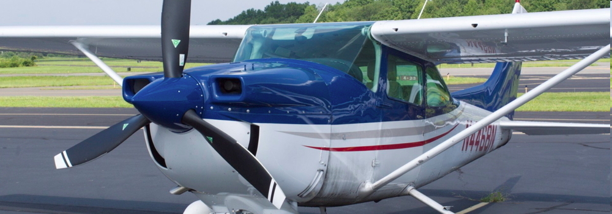
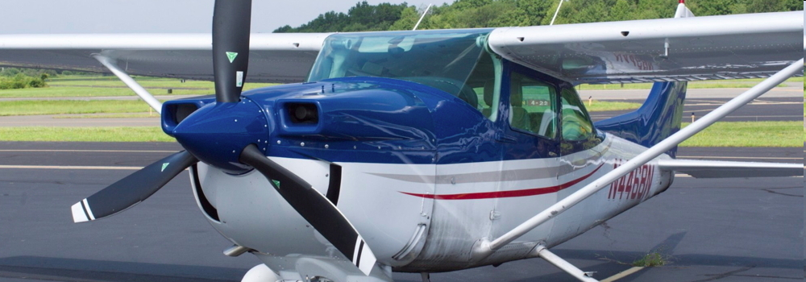
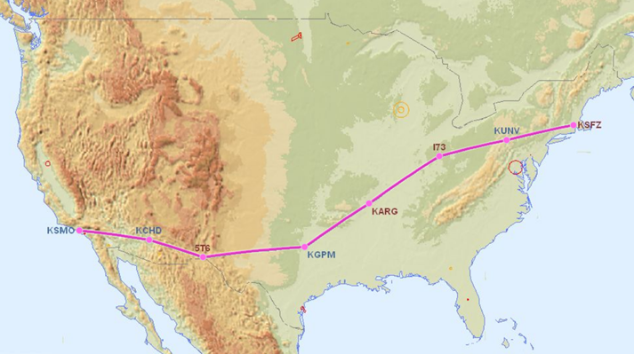
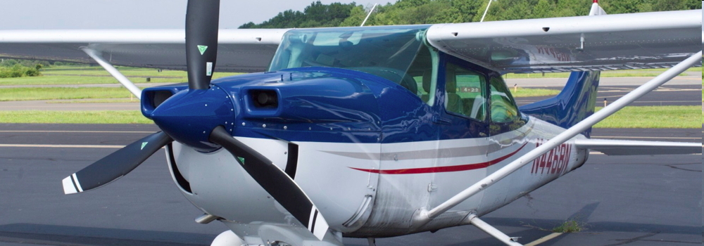

About the Bioplane
Paramus Flying Club's Cessna 182 was fueled with a 50-50 blend of aviation biofuel and Jet A to power the fuel-sipping SMA aviation diesel engine.
 

The weather was good Tuesday July 12th and the aviation biofuel performed perfectly in the SMA engine. Thierry Saint Loup, Vice President of SMA Engines and Ross McCurdy flew Paramus Flying Club's SMA Cessna 182 for 848 nautical miles over a nonstop triangular course for just over 9 hours to set a fuel efficiency World Record in the C 1-C class airplane, land, 1,000 - 1,750 kg.
April 16, 2016 10:20 AM - April 25, 2016 5:22 PM
The Coast to Coast Bioplane landed back in Rhode Island at North Central State Airport on Monday April 25th 2016 at 5:22 PM to a warm reception of family, friends, and friendly TV news reporters.
After the years of preparation it felt great to achieve this flight and fly the entire 5,000 nm round trip to California and back with Aviation Biofuel. The aviation biofuel performed perfectly in the highly efficient SMA Diesel engine over the entire flight and clearly demonstrated that biofuels work.
By increasing energy efficiency and using renewable energy in our vehicles, homes, and businesses we can save money, improve the environment, and move towards a Sustainable Future.
This has been an amazing flight and it was great to meet so many people interested in aviation and renewable energy.
We look forward to updating this website as we now work to achieve the Around the World Bioflight.
Our most sincere thanks to everyone who made this flight possible!
The Coast to Coast Biofuel Airplane Project combined the excitement of aviation with the leading edge in renewable energy technology. Using aviation biofuel in a single engine Cessna equipped with an amazingly efficient SMA diesel engine, we achieved a 5,000 nautical mile flight from Rhode Island to California and back.
The key to a sustainable energy future is twofold, increasing energy efficiency and using renewable energy. By increasing energy efficiency of our homes, appliances, vehicles, etc. we use less energy to get what we need done. By using renewable energy we are helping to ensure a sustainable future, a cleaner environment, and a better quality of life.
This was the first transcontinental flight using aviation biofuel in a certified light aircraft.
The aviation biofuel was made from renewable Camelina plant seed oil and blended 50-50 with regular Jet A to meet ASTM D7566 standards. The biofuel was supplied by the Air Force in order to obtain additional aviation diesel engine test data. The aviation biofuel blend was run through over twenty lab tests to ensure it met or exceeded the required specifications and this aviation biofuel blend is a drop-in replacement for Jet A that can be used in jet engines, turboprop engines, and aviation diesel engines. With 50% of the fuel made from renewable Camelina plant seed oil the emissions are reduced, the carbon footprint is significantly lower, and there is no lead in the fuel. This makes it much better for the environment.
While some renewable energy technologies hold great promise but are not yet “ready for prime time”, diesel engines are a proven technology that have been in use for over 100 years. There is a reason the great 18 wheeler “big rig” trucks travelling the world’s highways all use diesel engines. They are fuel efficient, powerful, and reliable.
With rising fuel costs and environmental concerns about the lead that is still used in aviation gasoline, diesel engines are a great solution for most general aviation airplanes. Along with the benefits of greater fuel efficiency, reliability, and lower emissions, aviation diesel engines can also use renewable aviation biofuels.
The SMA aviation diesel engine in the single engine, four passenger Cessna 182 we flew is 30-40% more fuel efficient than the avgas burning stock engine it replaced. This saves a lot of fuel, a lot of money, and is better for the environment.
Increasing energy efficiency and using renewable energy are the keys to a sustainable future. The Coast to Coast Biofuel Airplane Project clearly demonstrated this to promote renewable energy, aviation, and the excitement of real world science education.
Blue Skies!
 The Flight Route
Paramus Flying Club's Cessna 182 was fueled with a 50-50 blend of aviation biofuel and Jet A to power the fuel-sipping SMA aviation diesel engine.

By R.J. Heim, NBC 10 News on March 30th, 2016
By Melissa Randall, ABC 6 News on March 30th 2016
The Malloy family has been in the fuel business since 1935, always providing a personal and reliable touch in the Rhode Island and Southern Massachusetts area. We pledge to continue our family commitment to a new and ever-changing field of energy. We offer full-service home heating, and on- and off-road diesel/biodiesel deliveries for transportation. We are Coast Guard Certified to do marine fueling. We are proud to be Rhode Island's leading biodiesel distributor and consumer. We exclusively use Rhode Island made biodiesel to fuel our own fleet. This is to help address some of the pressing energy concerns that face our country today as well as reduces our emissions and expense.
The Bose A20 Aviation Headsets are the best available and the choice of serious pilots around the World. The active noise cancelling is key to the crystal clear sound while their light weight and fit make them the most comfortable, even over the longest flights.
DOXA was founded in 1889 in Switzerland and their watches are legendary. Doxa watches have a history rich in car racing and aviation, and are renowned for making the World’s best dive watch. Waterproof to depths measured in thousands of feet, Doxa watches are ready for any adventure.
Abaqus is a software company with its headquarters in Providence, Rhode Island. The Abaqus Unified FEA product suite offers powerful and complete solutions for both routine and sophisticated engineering problems covering a vast spectrum of industrial applications. In the automotive industry engineering work groups are able to consider full vehicle loads, dynamic vibration, multibody systems, impact/crash, nonlinear static, thermal coupling, and acoustic-structural coupling using a common model data structure and integrated solver technology. Best-in-class companies are taking advantage of Abaqus Unified FEA to consolidate their processes and tools, reduce costs and inefficiencies, and gain a competitive advantage.
For over 100 years, the Arpin family and its worldwide agency network have exceeded customers' expectations with laser–focused attention on delivering high caliber moving services to relocating families.
ReNewable Now is the one network that is totally dedicated to advancing the principals of sustainability. The creation of the network was on May 1, 2012 when professionals from the business community and educational community came together with professionals in television, cable , radio, and new media technologies to focus on what they believe to be the next economy, the Green Economy.
Toray Plastics is located in North Kingstown, Rhode Island and has the largest Solar installation in the state. As the only U.S. manufacturer of precision-performance polyester, polypropylene, metallized, and bio-based films, Toray produces 188 million pounds of film annually for flexible and rigid packaging, lidding, graphic, industrial, optical, and electronic applications.
If you drive a car, you want to be a member of AAA. In case of a vehicle problem AAA Southern New England will be there to help. Like the time my car wouldn't start at the movie theater at midnight, in Winter, with the temperature a bone chilling 3 degrees Fahrenheit, with my kid. AAA SNE towed my car to my mechanic and took us home. AAA SNE is also great for trip planning and road maps, and they take great photos when it comes time to renew your Driver's License.
Newport Biodiesel produces clean burning fuel from second use or waste vegetable oil. It can fuel any diesel engine or home heating furnace without modification. Newport Biodiesel is simple to use, biodegradable, nontoxic, and essentially free of sulfur and aromatics. Newport Biodiesel is ecologically the best and highest use of waste vegetable oil. Newport Biodiesel is committed to their sustainable model to protect the environment, reduce their carbon footprint and convert a locally generated waste product into a superior alternative fuel for use around New England.
If you have a Cessna 182 P or Q model the Fresh Pick Supplemental Type Certificate (STC) will increase the useful load of your Cessna 182P or 182Q by 150 to 160 pounds. Best of all, this new STC requires no parts, no modifications, and no installation labor costs. One low initial price, and your airplane suddenly gains greater utility, value, and safety benefits.
The Fresh Pick STC on the Cessna 182Q Bioplane is making it possible for me to take my son Aedan on the Coast to Coast Bioflight. Thanks Fresh Pick!
Prist Aerospace-Nexeo Solutions makes Prist Hi Flash anti-icing aviation fuel additives for Jet fuel and Prist acrylic & plastic windshield cleaner. Prist windshield cleaner works safely and easily on all acrylic, stretched acrylic, polycarbonate, glass and coated glass aircraft windscreens. Prist windshield cleaner works inside and outside the aircraft, on metal and vinyl, without harming painted surfaces. Prist products are used around the world for military, commercial, and general aviation aircraft.
Seattle Avionics is one of the biggest names in Aviation Software. Their Voyager and FlyQ Electronic Flight Bags for PC's, IPads, and Smartphones include digital aviation charts and GPS technology to provide pilots the best situational awareness possible, making flying safer and more enjoyable.
Randolph Handcrafted American Eyewear makes a wide selection of sunglasses for aviation and beyond, all made in USA.
Randolph's flagship Aviator sunglasses were originally built for the U.S. Military and surpass rigid military-spec standards. Standard issue since 1982, these are battle tested and suitable for the most rigorous and demanding use. Worn by pilots, taste-makers, and those who demand the best.
Levil Aviation designs and manufactures aviation-grade GPS, ADS-B, and AHRS systems for pilots that pack a huge amount of technology in a small size and at an affordable price. Their ILevil2 systems turn an IPad or other tablet into an amazing glass panel that includes Weather and Traffic information to maximize situational awareness and safety while flying.
Full Circle Recycling in Johnston, Rhode Island recycles everything from paper and cardboard to ferrous metals, car batteries, and vehicles. If it can be recycled, Full Circle Recycling can probably do it.
Providing The smarter way to bank is an endeavor that sets Pawtucket Credit Union apart from other banking institutions. As an organization founded by, and run for, the benefit of its members, this philosophy is woven throughout all business and civic activities. Importantly, it also translates into investment in the local communities where we all work and live. As the banking landscape continues to evolve, we will remain steadfast in our commitment to delivering The smarter way to bank and to assisting our members in achieving a bright financial future.
Email: rkmccurdy@yahoo.com
Cell: 401-241-6506
Home: 401-231-7986
Address: Smithfield, RI 02917
Please feel free to contact me for information on the Coast to Coast Biofuel Airplane Project or other renewable energy projects that I've worked with.